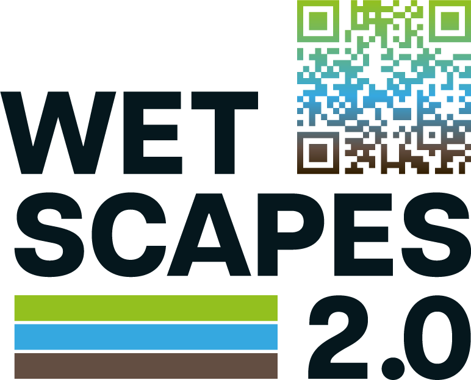

Dataset Explorer
Load CKAN Datasets
Site Filter
Site Name:
Apply Filter
Remove Filter
Temporal Filter
Preset:
Past 1 week
Past 1 month
Next 1 week
Next 1 month
Custom
After Date:
Before Date:
Apply Filter
Remove Filter
Person Filter
Author/Maintainer Name:
Apply Filter
Remove Filter
User-defined Layer
Layer Name:
Add Selected Layer